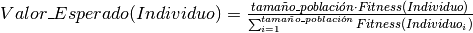
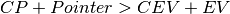

StochasticUniversalSampling (script)¶
Se determina la técnica conocida como Stochastic Universal Sampling
(ó Muestreo Estocástico Universal).
Primero que nada es menester mencionar que es necesario el uso del Expected Value (ó Valor Esperado) de cada Individuo.
Para fines concernientes a este proyecto, se trata del número de “hijos” que un Individuo puede ofrecer. Éste se calcula de la siguiente forma:

Con base a lo anterior, el método consiste en lo siguiente:
- Se selecciona un valor aleatorio entre 0 y 1, a éste se le llamará Pointer (ó Puntero)
- De manera secuencial se seleccionarán tantos Individuos como el tamaño de la población, los cuales deben estar igualmente espaciados en su Valor Esperado tomando como referencia el valor de Pointer.
Es importante aclarar el segundo punto, así que se abordará desde una perspectiva computacional:
- Se deben tener variables adicionales que indiquen la acumulación tanto del Pointer (CP, Cumulative Pointers) como de los Valores Esperados (CEV, Cumulative Expected Value) así como al Individuo actual que está siendo seleccionado (I).
- Para averiguar si un Individuo está igualmente espaciado en su Valor Esperado con respecto de los demás basándose en Pointer, basta con corroborar que:

- Si la condición descrita es verdadera los valores EV e I deben actualizarse (I se ajusta al siguiente Individuo) ya que esto indica que se buscará al siguiente Individuo espaciado equitativamente con el valor Pointer. No se hace nada si la condición es falsa.
- Independientemente del valor de la condición anterior, CP y CEV deben actualizarse durante todo el ciclo.
Cabe mencionar que si la lista de Individuos se agota, se puede volver a iterar
desde el inicio teniendo cautela en conservar CEV y CP.
-
execute_selection_technique(population, selection_parameters)¶ De acuerdo a la información provista anteriormente, se implementa el método conocido como Stochastic Universal Sampling (ó Muestreo Estocástico Universal).